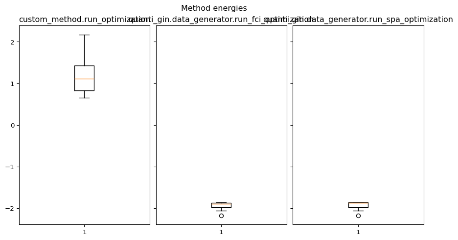
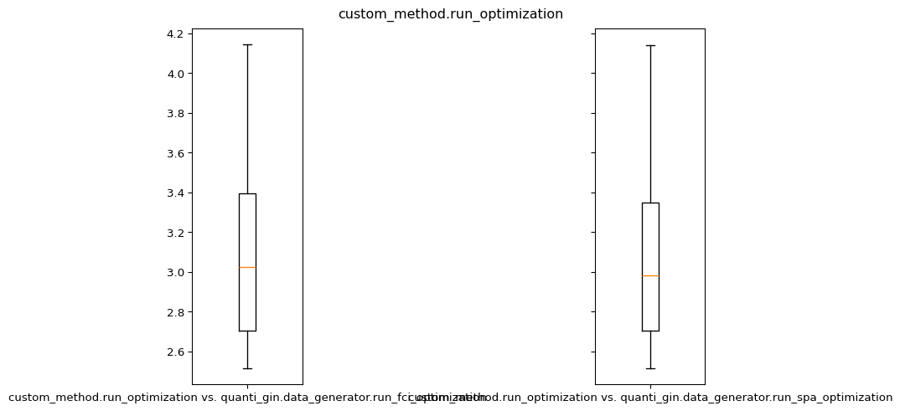
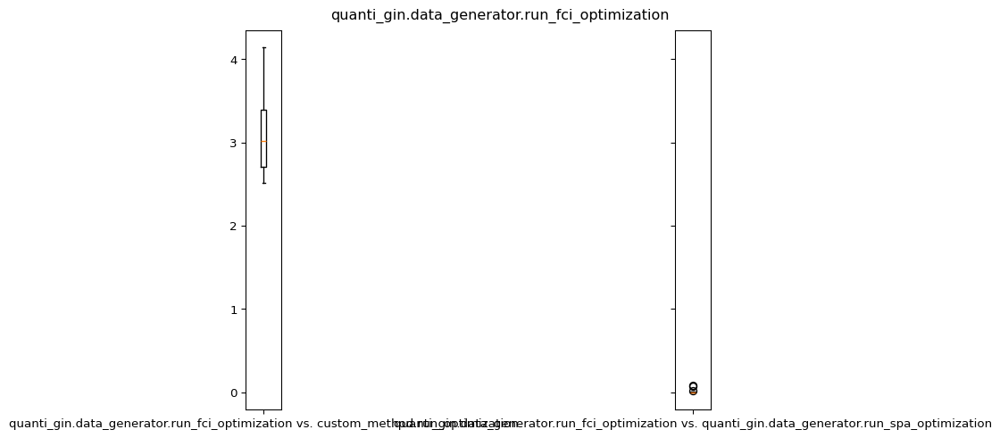
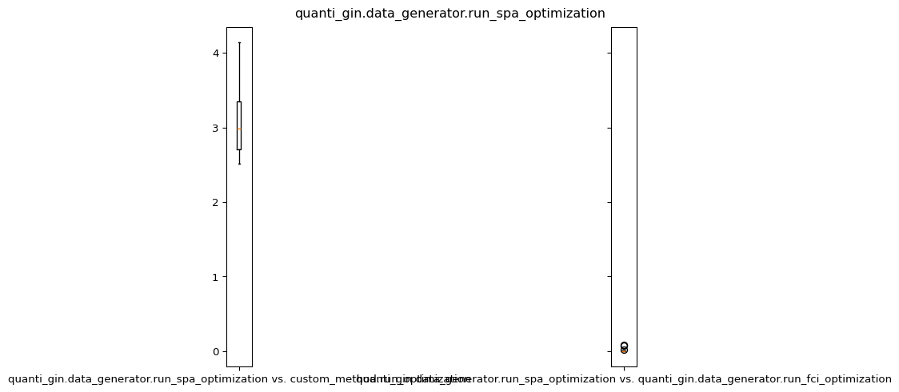

Collecting quanti-gin
Downloading quanti_gin-2.5.0-py3-none-any.whl.metadata (2.3 kB)
Requirement already satisfied: numpy in /usr/share/miniconda/envs/blogqa/lib/python3.11/site-packages (from quanti-gin) (2.4.0)
Requirement already satisfied: pandas<3.0.0,>=2.2.2 in /usr/share/miniconda/envs/blogqa/lib/python3.11/site-packages (from quanti-gin) (2.3.3)
Requirement already satisfied: tequila-basic<2.0.0,>=1.9.8 in /usr/share/miniconda/envs/blogqa/lib/python3.11/site-packages (from quanti-gin) (1.9.10)
Requirement already satisfied: python-dateutil>=2.8.2 in /usr/share/miniconda/envs/blogqa/lib/python3.11/site-packages (from pandas<3.0.0,>=2.2.2->quanti-gin) (2.9.0.post0)
Requirement already satisfied: pytz>=2020.1 in /usr/share/miniconda/envs/blogqa/lib/python3.11/site-packages (from pandas<3.0.0,>=2.2.2->quanti-gin) (2025.2)
Requirement already satisfied: tzdata>=2022.7 in /usr/share/miniconda/envs/blogqa/lib/python3.11/site-packages (from pandas<3.0.0,>=2.2.2->quanti-gin) (2025.3)
Requirement already satisfied: scipy in /usr/share/miniconda/envs/blogqa/lib/python3.11/site-packages (from tequila-basic<2.0.0,>=1.9.8->quanti-gin) (1.16.3)
Requirement already satisfied: sympy in /usr/share/miniconda/envs/blogqa/lib/python3.11/site-packages (from tequila-basic<2.0.0,>=1.9.8->quanti-gin) (1.14.0)
Requirement already satisfied: autograd in /usr/share/miniconda/envs/blogqa/lib/python3.11/site-packages (from tequila-basic<2.0.0,>=1.9.8->quanti-gin) (1.8.0)
Requirement already satisfied: setuptools in /usr/share/miniconda/envs/blogqa/lib/python3.11/site-packages (from tequila-basic<2.0.0,>=1.9.8->quanti-gin) (80.9.0)
Requirement already satisfied: pytest in /usr/share/miniconda/envs/blogqa/lib/python3.11/site-packages (from tequila-basic<2.0.0,>=1.9.8->quanti-gin) (9.0.2)
Requirement already satisfied: openfermion~=1.0 in /usr/share/miniconda/envs/blogqa/lib/python3.11/site-packages (from tequila-basic<2.0.0,>=1.9.8->quanti-gin) (1.7.1)
Requirement already satisfied: cirq-core>=1.4.1 in /usr/share/miniconda/envs/blogqa/lib/python3.11/site-packages (from openfermion~=1.0->tequila-basic<2.0.0,>=1.9.8->quanti-gin) (1.6.1)
Requirement already satisfied: deprecation in /usr/share/miniconda/envs/blogqa/lib/python3.11/site-packages (from openfermion~=1.0->tequila-basic<2.0.0,>=1.9.8->quanti-gin) (2.1.0)
Requirement already satisfied: h5py>=3.10.0 in /usr/share/miniconda/envs/blogqa/lib/python3.11/site-packages (from openfermion~=1.0->tequila-basic<2.0.0,>=1.9.8->quanti-gin) (3.15.1)
Requirement already satisfied: networkx in /usr/share/miniconda/envs/blogqa/lib/python3.11/site-packages (from openfermion~=1.0->tequila-basic<2.0.0,>=1.9.8->quanti-gin) (3.6.1)
Requirement already satisfied: pubchempy in /usr/share/miniconda/envs/blogqa/lib/python3.11/site-packages (from openfermion~=1.0->tequila-basic<2.0.0,>=1.9.8->quanti-gin) (1.0.5)
Requirement already satisfied: requests~=2.32.2 in /usr/share/miniconda/envs/blogqa/lib/python3.11/site-packages (from openfermion~=1.0->tequila-basic<2.0.0,>=1.9.8->quanti-gin) (2.32.5)
Requirement already satisfied: charset_normalizer<4,>=2 in /usr/share/miniconda/envs/blogqa/lib/python3.11/site-packages (from requests~=2.32.2->openfermion~=1.0->tequila-basic<2.0.0,>=1.9.8->quanti-gin) (3.4.4)
Requirement already satisfied: idna<4,>=2.5 in /usr/share/miniconda/envs/blogqa/lib/python3.11/site-packages (from requests~=2.32.2->openfermion~=1.0->tequila-basic<2.0.0,>=1.9.8->quanti-gin) (3.11)
Requirement already satisfied: urllib3<3,>=1.21.1 in /usr/share/miniconda/envs/blogqa/lib/python3.11/site-packages (from requests~=2.32.2->openfermion~=1.0->tequila-basic<2.0.0,>=1.9.8->quanti-gin) (2.6.2)
Requirement already satisfied: certifi>=2017.4.17 in /usr/share/miniconda/envs/blogqa/lib/python3.11/site-packages (from requests~=2.32.2->openfermion~=1.0->tequila-basic<2.0.0,>=1.9.8->quanti-gin) (2025.11.12)
Requirement already satisfied: attrs>=21.3.0 in /usr/share/miniconda/envs/blogqa/lib/python3.11/site-packages (from cirq-core>=1.4.1->openfermion~=1.0->tequila-basic<2.0.0,>=1.9.8->quanti-gin) (25.4.0)
Requirement already satisfied: duet>=0.2.8 in /usr/share/miniconda/envs/blogqa/lib/python3.11/site-packages (from cirq-core>=1.4.1->openfermion~=1.0->tequila-basic<2.0.0,>=1.9.8->quanti-gin) (0.2.9)
Requirement already satisfied: matplotlib~=3.8 in /usr/share/miniconda/envs/blogqa/lib/python3.11/site-packages (from cirq-core>=1.4.1->openfermion~=1.0->tequila-basic<2.0.0,>=1.9.8->quanti-gin) (3.10.8)
Requirement already satisfied: sortedcontainers~=2.0 in /usr/share/miniconda/envs/blogqa/lib/python3.11/site-packages (from cirq-core>=1.4.1->openfermion~=1.0->tequila-basic<2.0.0,>=1.9.8->quanti-gin) (2.4.0)
Requirement already satisfied: typing_extensions>=4.2 in /usr/share/miniconda/envs/blogqa/lib/python3.11/site-packages (from cirq-core>=1.4.1->openfermion~=1.0->tequila-basic<2.0.0,>=1.9.8->quanti-gin) (4.15.0)
Requirement already satisfied: tqdm>=4.12 in /usr/share/miniconda/envs/blogqa/lib/python3.11/site-packages (from cirq-core>=1.4.1->openfermion~=1.0->tequila-basic<2.0.0,>=1.9.8->quanti-gin) (4.67.1)
Requirement already satisfied: contourpy>=1.0.1 in /usr/share/miniconda/envs/blogqa/lib/python3.11/site-packages (from matplotlib~=3.8->cirq-core>=1.4.1->openfermion~=1.0->tequila-basic<2.0.0,>=1.9.8->quanti-gin) (1.3.3)
Requirement already satisfied: cycler>=0.10 in /usr/share/miniconda/envs/blogqa/lib/python3.11/site-packages (from matplotlib~=3.8->cirq-core>=1.4.1->openfermion~=1.0->tequila-basic<2.0.0,>=1.9.8->quanti-gin) (0.12.1)
Requirement already satisfied: fonttools>=4.22.0 in /usr/share/miniconda/envs/blogqa/lib/python3.11/site-packages (from matplotlib~=3.8->cirq-core>=1.4.1->openfermion~=1.0->tequila-basic<2.0.0,>=1.9.8->quanti-gin) (4.61.1)
Requirement already satisfied: kiwisolver>=1.3.1 in /usr/share/miniconda/envs/blogqa/lib/python3.11/site-packages (from matplotlib~=3.8->cirq-core>=1.4.1->openfermion~=1.0->tequila-basic<2.0.0,>=1.9.8->quanti-gin) (1.4.9)
Requirement already satisfied: packaging>=20.0 in /usr/share/miniconda/envs/blogqa/lib/python3.11/site-packages (from matplotlib~=3.8->cirq-core>=1.4.1->openfermion~=1.0->tequila-basic<2.0.0,>=1.9.8->quanti-gin) (25.0)
Requirement already satisfied: pillow>=8 in /usr/share/miniconda/envs/blogqa/lib/python3.11/site-packages (from matplotlib~=3.8->cirq-core>=1.4.1->openfermion~=1.0->tequila-basic<2.0.0,>=1.9.8->quanti-gin) (12.1.0)
Requirement already satisfied: pyparsing>=3 in /usr/share/miniconda/envs/blogqa/lib/python3.11/site-packages (from matplotlib~=3.8->cirq-core>=1.4.1->openfermion~=1.0->tequila-basic<2.0.0,>=1.9.8->quanti-gin) (3.3.1)
Requirement already satisfied: six>=1.5 in /usr/share/miniconda/envs/blogqa/lib/python3.11/site-packages (from python-dateutil>=2.8.2->pandas<3.0.0,>=2.2.2->quanti-gin) (1.17.0)
Requirement already satisfied: iniconfig>=1.0.1 in /usr/share/miniconda/envs/blogqa/lib/python3.11/site-packages (from pytest->tequila-basic<2.0.0,>=1.9.8->quanti-gin) (2.3.0)
Requirement already satisfied: pluggy<2,>=1.5 in /usr/share/miniconda/envs/blogqa/lib/python3.11/site-packages (from pytest->tequila-basic<2.0.0,>=1.9.8->quanti-gin) (1.6.0)
Requirement already satisfied: pygments>=2.7.2 in /usr/share/miniconda/envs/blogqa/lib/python3.11/site-packages (from pytest->tequila-basic<2.0.0,>=1.9.8->quanti-gin) (2.19.2)
Requirement already satisfied: mpmath<1.4,>=1.1.0 in /usr/share/miniconda/envs/blogqa/lib/python3.11/site-packages (from sympy->tequila-basic<2.0.0,>=1.9.8->quanti-gin) (1.3.0)
Downloading quanti_gin-2.5.0-py3-none-any.whl (14 kB)
Installing collected packages: quanti-gin
Successfully installed quanti-gin-2.5.0Introduction
Working in the quantum domain, we often lack good tools to compare and benchmark against state-of-the-art optimization methods. Benchmarking, requires large amounts of reference data for statistically significant comparisons, so we introduce a configurable data generator which can be used to create large sets of hydrogenic test systems and their corresponding energies, with a focus on allowing quick and easy plug-in testing of custom optimization methods. In the following, we introduce the data generator quanti-gin (available at: https://github.com/nylser/quanti-gin) and illustrate how to use and customize it.
Installation
Prerequisites for the quanti-gin
quanti-gin can easily be installed via pip install quanti-gin in your preferred python environment or with your preferred python package manager. This will install the data generator and its dependencies.
Data generator & visualization
For the generation and analysis of data, we introduce: 1) a parameterizable data generator for the synthesis of data, and 2) a jupyter notebook that can be used to inspect the features & quality of the data, as well as 3) an experimental machine learning application notebook.
Data generator
We define DataGenerator class and associated functions to generate and optimize examples of hydrogen molecules using the Tequila package. Here is a summary of the main functionalities:
- Data Classes and Initialization:
- Job Dataclass: A data structure that stores information about a DataGenerator job, including geometry, edges, guesses, coordinates, and distances.
- Geometry and Coordinate Generation:
- generate_geometry_string: Creates a string representation of molecular geometry from coordinates.
- generate_coordinates: Generates a set of coordinates for atoms in a molecule, ensuring a minimum distance between atoms to avoid generating infeasible data.
- Optimization and Reference Computation:
- run_optimization: Optimizes the molecular geometry molecule and calculates energies.
- Job Generation and Execution:
- generate_jobs: Creates a list of molecular jobs with varying geometries, edges, and guesses.
- execute_job: Runs the optimization for a single job.
- execute_jobs: Runs the optimization for a list of jobs, displaying progress.
- Result Processing:
- create_result_df: Generates a DataFrame from job results, including optimized energies, exact energies, and coordinates.
- Main Execution:
- The
mainfunction parses command-line arguments, sets up job generation and execution, evaluates results, and saves the final data to a CSV file.
- The
The code is structured to generate molecular geometries, perform quantum chemistry calculations, and analyze results efficiently, leveraging parallel processing and progress tracking with tqdm.
Usage Instructions
Basic Command to Generate Jobs and Results: Run the data generator for one of the built in methods with the following command-line arguments:
python -m quanti_gin [--method {fci,spa}] [--output <output_file>] <number_of_atoms> <number_of_jobs>--method {fci,spa}(optional): Specify the method to choose one of the built-in methods.--output <output_file>(optional): Specify the name of the output file to save results.<number_of_atoms>: Number of atoms in the molecules (must be an even number).<number_of_jobs>: Number of molecular jobs to generate and process.
Example:
python -m quanti_gin 4 100 --output results.csvThis will run the data generator with 100 jobs for a molecule with 4 atoms, using the default method (SPA) and save the results to
results.csv.Compare with custom methods and FCI To compare multiple built-in methods with a custom method, use the following command:
python -m quanti_gin --compare-to fci,spa --custom_method <path_to_method.py> <number_of_atoms> <number_of_jobs>--compare-to fci,spa: Specify the methods to compare with the custom method.--custom_method <path_to_method.py>: Specify the path to the custom method file.<number_of_atoms>: Number of atoms in the molecules (must be an even number).<number_of_jobs>: Number of molecular jobs to generate and process.
This will run the data generator with 100 jobs for a molecule with 4 atoms, every job will be calculated with the custom method, the FCI method, and the SPA method.
Creating a custom optimization method for comparison
As an example, we can create a custom optimization method that uses a different optimization algorithm or circuit structure. To do this, we can create a new python file with the custom optimization method and can then pass it to the --custom_method argument.
First, we initialize our Hamiltonian and Ansatz circuit. Make note that we are only getting the molecule as an input, which is a QuantumChemistryBase object from tequila. Using the molecule, one can easily get the geometry, basis set, and other information needed for the optimization, so there is no need to use tequila for the optimization itself.
import tequila as tq
from tequila.quantumchemistry import QuantumChemistryBase
def run_optimization(mol: QuantumChemistryBase, *args, **kwargs):
H = mol.make_hamiltonian()
U = tq.gates.QCircuit()Now, for building the circuit, we populate the circuit U, using a structural approach:
# structure of the ansatz:
# 1. Ry rotations on all qubits
1 for i in range(len(coordinates) * 2):
U += tq.gates.Ry(target=i, angle="a" + str(i))
depth = 2
# 2. Entangling layer => Alternating: CNOTs on even and odd qubits
# 3. Ry rotations on all qubits
2 for d in range(depth):
offset = d % 2
iterations = len(coordinates) * 2
3 for i in range(0, iterations - 1 - offset, 2):
U += tq.gates.CNOT(control=offset + i, target=offset + i + 1)
4 for i in range(iterations):
U += tq.gates.Ry(target=i, angle=f"b{d}_{i}")- 1
- Add an Ry rotation gate for all qubits we need to represent the atoms of the molecule.
- 2
- Repeat while configured depth is not reached:
- 3
- Add entangling layer: CNOTs alternating on even/odd qubits per iteration
- 4
- Add Ry rotation on all qubits
The resulting circuit with the configured depth = 2 for 4 H-atoms is illustrated in Figure 1.

1 E = tq.ExpectationValue(H=H, U=U)
2 result = tq.minimize(E, silent=True)
return {
"energy": result.energy,
}- 1
-
Create an expectation value
Ewith our previously obtained HamiltonianHfor the molecule, and constructed circuitU. - 2
- run the minimization algorithm for that expectation value via tequila.
The only requirement for the custom method is that it returns a dictionary in the form:
{
"energy": result.energy,
}This concludes the introduction of custom methods for the quanti-gin DataGenerator. If you desire to customize more or different aspects, you can use a subclass of the DataGenerator class and override the methods you want to change. Looking at the source code of quanti-gin https://github.com/nylser/quanti-gin always is a good reference and starting point.
Data Visualization
The quanti-gin repository includes a Jupter Notebook for visualizations and analysis of the generated data.
Data Visualization Example
If you just want to visualize the different methods and their results, you can use the following code.
Setup and load the data:
from pathlib import Path
import matplotlib.pyplot as plt
import numpy as np
import random
from quanti_gin.shared import (
read_data_file,
)
data = read_data_file(Path("./example_data.csv"))Now, data.df contains the data in a pandas DataFrame, which can be used for visualization and analysis. As our example data compares multiple methods against each other, we can group the data by the method and visualize the results.
grouped_methods = data.df.groupby("method")
method_names = grouped_methods.groups.keys()
# boxplot of custom_energy and fci, and SPA energy
fig, axes = plt.subplots(
1, len(grouped_methods), sharey=True, figsize=(9, 5), layout="constrained"
)
fig.suptitle("Method energies")
fig.set_figheight(fig.get_figheight())
for i, (axis, (method_name, method)) in enumerate(zip(axes, grouped_methods)):
axis.boxplot(method.optimized_energy)
axis.set_title(method_name)
plt.show()
To compare all the different methods to each other, we can use this example plot:
combinations = []
for method_a in method_names:
combinations.append(
[(method_a, method_b) for method_b in method_names if method_a != method_b]
)
for comb_list in combinations:
fig, axes = plt.subplots(
1, len(method_names) - 1, sharey=True, figsize=(10, 5), layout="constrained"
)
fig.suptitle(f"{comb_list[0][0]}")
for plot, (a, b) in zip(axes, comb_list):
energy_a = np.array(grouped_methods.get_group(a).optimized_energy)
energy_b = np.array(grouped_methods.get_group(b).optimized_energy)
error = np.abs(energy_a - energy_b)
plot.boxplot(abs(energy_a - energy_b), labels=[f"{a} vs. {b}"])
plt.show()/tmp/ipykernel_3453/1747858103.py:17: MatplotlibDeprecationWarning: The 'labels' parameter of boxplot() has been renamed 'tick_labels' since Matplotlib 3.9; support for the old name will be dropped in 3.11.
plot.boxplot(abs(energy_a - energy_b), labels=[f"{a} vs. {b}"])
/tmp/ipykernel_3453/1747858103.py:17: MatplotlibDeprecationWarning: The 'labels' parameter of boxplot() has been renamed 'tick_labels' since Matplotlib 3.9; support for the old name will be dropped in 3.11.
plot.boxplot(abs(energy_a - energy_b), labels=[f"{a} vs. {b}"])
/tmp/ipykernel_3453/1747858103.py:17: MatplotlibDeprecationWarning: The 'labels' parameter of boxplot() has been renamed 'tick_labels' since Matplotlib 3.9; support for the old name will be dropped in 3.11.
plot.boxplot(abs(energy_a - energy_b), labels=[f"{a} vs. {b}"])
/tmp/ipykernel_3453/1747858103.py:17: MatplotlibDeprecationWarning: The 'labels' parameter of boxplot() has been renamed 'tick_labels' since Matplotlib 3.9; support for the old name will be dropped in 3.11.
plot.boxplot(abs(energy_a - energy_b), labels=[f"{a} vs. {b}"])
/tmp/ipykernel_3453/1747858103.py:17: MatplotlibDeprecationWarning: The 'labels' parameter of boxplot() has been renamed 'tick_labels' since Matplotlib 3.9; support for the old name will be dropped in 3.11.
plot.boxplot(abs(energy_a - energy_b), labels=[f"{a} vs. {b}"])
/tmp/ipykernel_3453/1747858103.py:17: MatplotlibDeprecationWarning: The 'labels' parameter of boxplot() has been renamed 'tick_labels' since Matplotlib 3.9; support for the old name will be dropped in 3.11.
plot.boxplot(abs(energy_a - energy_b), labels=[f"{a} vs. {b}"])


For more detailed analysis and visualization, you can use the provided Jupyter Notebook in the quanti-gin repository.